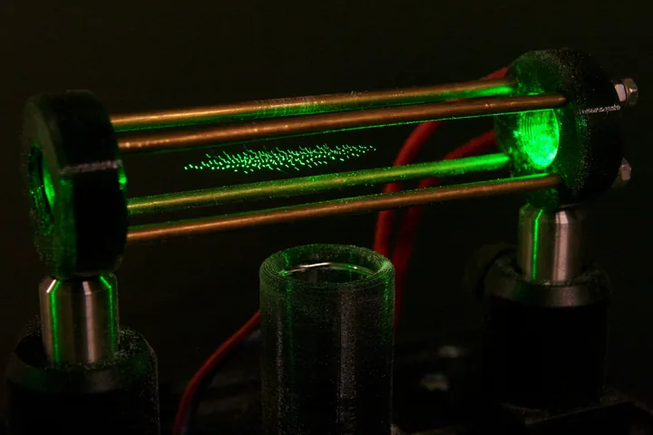

Campi a radiofrequenza: quadrupolo e trappola ionica
Nel 1953 a Bonn si scopre che un campo elettrico che cambia segno circa un milione di volte al secondo può filtrare gli ioni per massa, senza magnete. Da quell'idea nascono il quadrupolo e la trappola ionica.
Paul e Steinwedel (1953): il filtro di massa a quadrupolo
Nel 1953 Wolfgang Paul e H. Steinwedel pubblicano sulla Zeitschrift für Naturforschung una nota di tre pagine intitolata «Un nuovo spettrometro di massa senza campo magnetico». Il lavoro nasce nell'Istituto di Fisica dell'Università di Bonn, che Paul dirige dal 1952.
Nel suo racconto autobiografico per il Nobel, Paul scrive che lo spettrometro a quadrupolo e la trappola ionica furono concepiti e studiati a Bonn da giovani ricercatori del suo gruppo. Steinwedel vi faceva da teorico di casa.
L'idea fu protetta con un brevetto: priorità tedesca del 23 dicembre 1953, domanda americana del 21 dicembre 1954, concessione il 7 giugno 1960 con il numero US 2.939.952.
Stabile o instabile: l'equazione di Mathieu
Il filtro ha quattro barre parallele collegate a coppie. Le due barre opposte portano il potenziale U − V cos Ωt, le altre due il potenziale di segno contrario.
Il campo risultante ha la forma di una sella. In ogni istante spinge lo ione verso l'asse in una direzione e lo allontana nell'altra, e a ogni mezzo periodo della radiofrequenza i due ruoli si scambiano.
Il moto di uno ione in ciascun piano segue l'equazione di Mathieu, scritta qui con τ = Ωt/2 e con la posizione u misurata in unità del raggio del campo:
d2u/dτ2 + (a − 2q cos 2τ) u = 0(38.1)I parametri a e q crescono con U e con V e diminuiscono al crescere di m/z. Per certe coppie (a, q) lo ione oscilla restando vicino all'asse; per altre l'oscillazione cresce finché lo ione tocca una barra e si perde.
Con U e V in rapporto fisso, in un dato istante attraversa il filtro solo una stretta banda di masse. Variando V si fa scorrere la banda lungo lo spettro, senza parti in movimento. Il diagramma di stabilità completo è nel capitolo 7.
Tre masse nel filtro e nella trappola
Scegli «Filtro di massa» o «Trappola 3D», poi avvia l'animazione o avanza un passo alla volta. Le traiettorie sono calcolate al momento con l'equazione (38.1). Prova a portare V da 100% a 95%: la massa intermedia, prima stabile, esce dal filtro.
Descrizione della figura
Tre masse attraversano un quadrupolo visto di lato, tra due barre. La massa intermedia oscilla vicino all'asse e passa. La leggera e la pesante oscillano con ampiezza crescente fino a toccare una barra, dove la linea finisce con una croce. Scegliendo la trappola, gli stessi ioni sono mostrati come puntini attorno al centro di un anello con due calotte.
Dal laboratorio all'industria
Piccolo, economico, veloce: il quadrupolo per la GC-MS
Il quadrupolo non ha magnete. Servono quattro barre, un generatore di radiofrequenza e tensioni continue ben controllate: poco peso, poca potenza, costi contenuti.
La scansione si fa cambiando tensioni, quindi in modo elettronico e rapido. Uno spettro completo si ottiene in tempi abbastanza brevi da seguire un picco gascromatografico, e la risoluzione unitaria basta per leggere spettri EI e confrontarli con le librerie.
Per questo il quadrupolo è diventato l'analizzatore degli spettrometri da banco accoppiati alla GC e poi alla LC. Tre quadrupoli in serie, con una cella di collisione al centro, formano il triplo quadrupolo (capitolo 8).
La trappola di Paul
Chiudere il campo in tre dimensioni
La trappola usa lo stesso principio con un'altra geometria: un elettrodo ad anello e due calotte, come nella Figura 38.2. Il campo a radiofrequenza ha ancora la forma di una sella, ma ora è chiuso in tre dimensioni.
Gli ioni non attraversano più il dispositivo: restano in una nuvola vicino al centro. Il loro moto ha due parti, una oscillazione lenta attorno al centro e un tremolio rapido alla frequenza della radiofrequenza. Scegli «Trappola 3D» nella Figura 38.1 per vederle.
Anche qui conta la stabilità: se q supera circa 0,91, lo ione diventa instabile lungo l'asse ed esce attraverso una calotta. Il valore dipende dalla massa, e questo sarà utile fra poco.

Il premio Nobel 1989
Nel 1989 il premio Nobel per la fisica è diviso in due. Una metà va a Norman F. Ramsey per il metodo dei campi oscillanti separati, usato negli orologi atomici. L'altra metà va a Hans G. Dehmelt e a Wolfgang Paul «per lo sviluppo della tecnica della trappola ionica».
È un premio di fisica, non di chimica: la trappola serviva a isolare singoli atomi e ioni per periodi lunghi, per misurarne le proprietà con grande precisione. Paul ne ripercorre la storia nella conferenza Nobel dell'8 dicembre 1989.
La trappola ionica come spettrometro (anni '80)
Espulsione per instabilità di massa
Per molti anni la trappola resta uno strumento della fisica atomica. Nel 1984 G.C. Stafford e collaboratori pubblicano un articolo sui progressi della tecnologia della trappola ionica e sulle sue applicazioni analitiche.
Il metodo che ne nasce si chiama espulsione per instabilità di massa. Si accumulano gli ioni nella trappola e poi si alza la radiofrequenza: gli ioni diventano instabili uno dopo l'altro, quelli con q maggiore per primi, cioè i più leggeri. Escono dalle calotte verso un rivelatore, e l'ordine di uscita costruisce lo spettro.
Nella Figura 38.1 alza V in modalità trappola: la massa leggera, che era già instabile, esce per prima, poi tocca alle altre. Una trappola può inoltre isolare uno ione, frammentarlo e ripetere l'operazione sui frammenti. Si chiama MSn, e si fa in un solo dispositivo piccolo.
Le trappole lineari
Nel 2002 J.C. Schwartz, M.W. Senko e J.E.P. Syka descrivono uno spettrometro con una trappola quadrupolare bidimensionale: una trappola lineare. È un quadrupolo allungato in cui gli ioni sono chiusi anche lungo l'asse, da elettrodi alle due estremità.
Chi era
Wolfgang Paul (1913-1993)
Nato a Lorenzkirch, in Sassonia, il 10 agosto 1913, morto a Bonn il 7 dicembre 1993. Studiò a Monaco e a Berlino, lavorò con Hans Kopfermann a Kiel e a Gottinga e nel 1944 fu docente all'Università di Gottinga. Dal 1952 fu professore a Bonn e direttore dell'Istituto di Fisica, e fu a lungo attivo anche al CERN. Il suo contributo alla spettrometria di massa è il filtro a quadrupolo e la trappola ionica, che gli valsero il Nobel per la fisica 1989.
Hans G. Dehmelt (1922-2017)
Nato a Görlitz il 9 settembre 1922, morto a Seattle il 7 marzo 2017. Studiò fisica a Gottinga, dove seguì un corso di laboratorio tenuto da Paul, e lavorò poi all'Università di Washington a Seattle. Studiò come intrappolare ioni ed elettroni isolati con campi elettrici e magnetici; già nel 1956 indicò l'utilità di intrappolare gli ioni per la spettroscopia ad alta risoluzione. Divise il Nobel per la fisica 1989 con Paul.
Perché contava
- Il filtro a quadrupolo seleziona le masse con soli campi elettrici: niente magnete, costi bassi, scansione elettronica rapida.
- Questo rese possibili gli spettrometri da banco per la GC-MS e poi per la LC-MS, e il triplo quadrupolo.
- La trappola ionica porta in un dispositivo piccolo l'accumulo, la selezione e la frammentazione ripetuta (MSn).
Per capire meglio
Per capire meglio: Capitolo 7, Il quadrupolo: la teoria vera (equazioni di Mathieu e diagramma di stabilità).
Per capire meglio: Capitolo 8, Il triplo quadrupolo e la dissociazione per collisione (due filtri e una cella di collisione).
Per capire meglio: Capitolo 21, I tempi degli analizzatori: dwell time, sweep e duty cycle (quanto dura una scansione).
Fonti
- articoloPaul W., Steinwedel H. (1953) Ein neues Massenspektrometer ohne Magnetfeld. Z. Naturforsch. A 8, 448-450. doi:10.1515/zna-1953-0710
- storicoPaul W., Steinwedel H. (1960) Apparatus for separating charged particles of different specific charges. Brevetto US 2.939.952. patents.google.com/patent/US2939952A
- storicoNobel Prize in Physics 1989: Ramsey, Dehmelt, Paul. nobelprize.org; biografia di Paul: nobelprize.org; biografia di Dehmelt: nobelprize.org
- articoloPaul W. (1990) Electromagnetic traps for charged and neutral particles (conferenza Nobel). Rev. Mod. Phys. 62, 531-540. doi:10.1103/RevModPhys.62.531
- articoloStafford G.C., Kelley P.E., Syka J.E.P., Reynolds W.E., Todd J.F.J. (1984) Recent improvements in and analytical applications of advanced ion trap technology. Int. J. Mass Spectrom. Ion Processes 60, 85-98. doi:10.1016/0168-1176(84)80077-4
- articoloMarch R.E. (1997) An introduction to quadrupole ion trap mass spectrometry. J. Mass Spectrom. 32, 351-369. doi:10.1002/(SICI)1096-9888(199704)32:4<351::AID-JMS512>3.0.CO;2-Y
- articoloSchwartz J.C., Senko M.W., Syka J.E.P. (2002) A two-dimensional quadrupole ion trap mass spectrometer. J. Am. Soc. Mass Spectrom. 13, 659-669. doi:10.1016/S1044-0305(02)00384-7